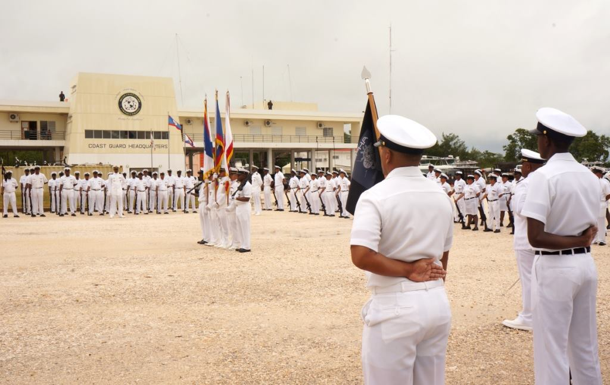

Recognizing the need for a specialized maritime force, the Government of
Belize officially established the Belize Coast Guard on November 30,
2005. The BCG was created under the Coast Guard Act of 2005, which
outlined its mandate, structure, and responsibilities. The primary
roles of the BCG include maritime law enforcement, search and rescue,
environmental protection, and supporting national security.
"Early Years of the Belize Coast Guard"
The BCG began operations with limited resources, including a small fleet
of patrol boats and a handful of personnel. Early missions focused
on combating illegal fishing, drug trafficking, and providing search and
rescue services. The BCG received training and equipment support
from international partners, including the United States, Mexico, and
Taiwan.
"Expansion of the Belize Coast Guard"
Over the years, the BCG has grown in size and capability, acquiring new
vessels, radar systems, and other equipment to enhance its operational
effectiveness. The BCG has established multiple bases along
Belize's coastline, including in Belize City, Big Creek,
Calabash, Hunting Caye and San Pedro, to improve its coverage and
response times.

The force has also developed a specialized unit, its Special Forces
Unit, to address specific threats like drug interdiction and port
security.
"Achievements of the Belize Coast Guard"
Maritime Law Enforcement: The BCG plays a critical role in
combating illegal fishing, drug trafficking, and human smuggling in
Belizean waters. Search and Rescue: The BCG has conducted
numerous search and rescue operations, saving lives during natural
disasters and maritime accidents. Environmental Protection:
The BCG works to protect Belize's marine ecosystems, including the
Belize Barrier Reef, a UNESCO World Heritage Site, by preventing
illegal fishing and pollution. Disaster Response: The BCG
has been instrumental in providing relief and support during hurricanes
and other natural disasters.
"Future Outlook of the Belize Coast Guard"
The Belize Coast Guard is expected to continue expanding its
capabilities, with a focus on modernizing its fleet, enhancing
surveillance technology, and increasing its personnel strength.
The BCG will likely play an increasingly important role in
regional security and environmental conservation efforts.